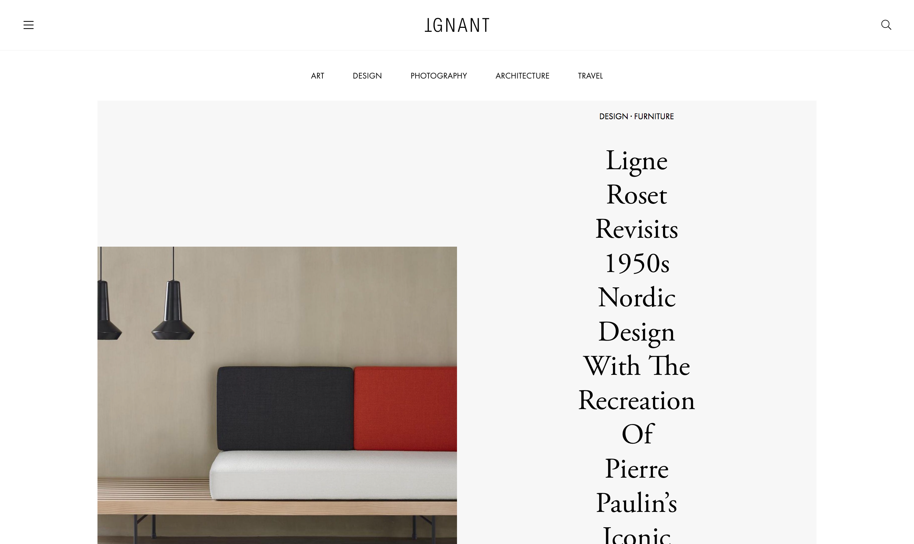
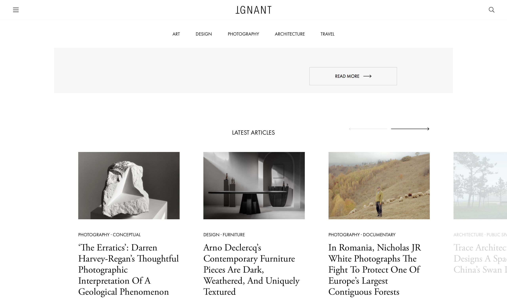
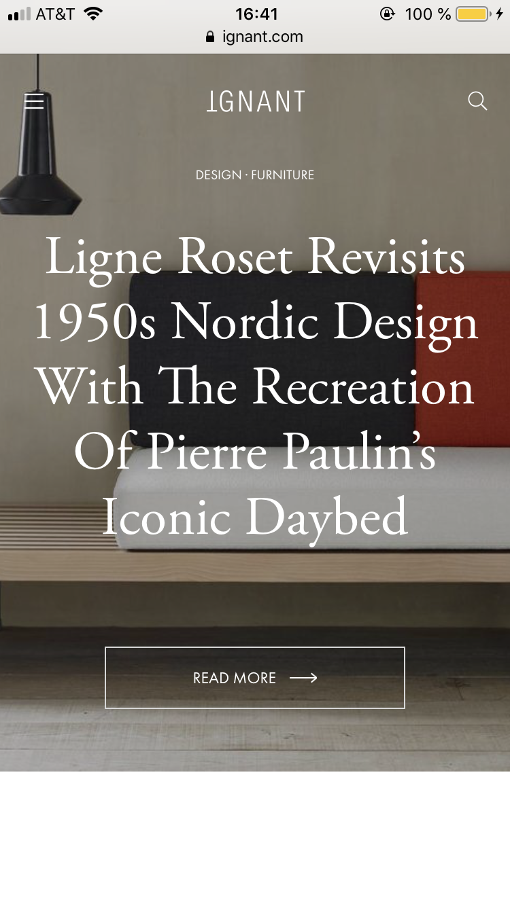
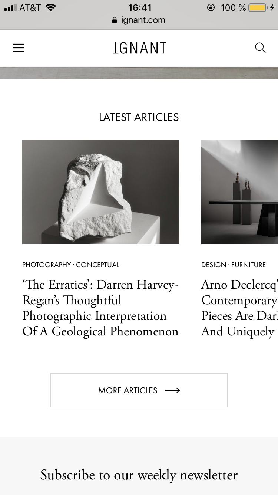
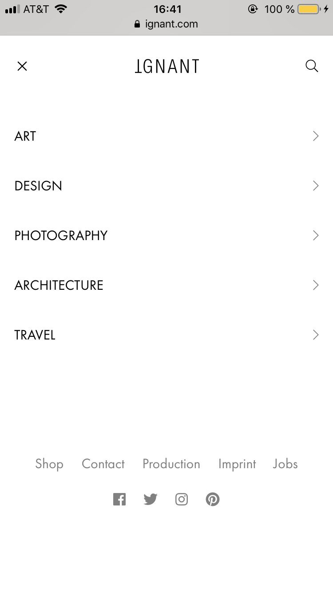
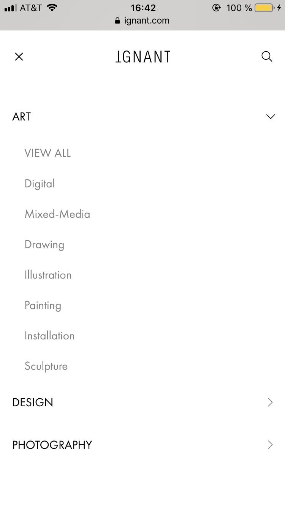
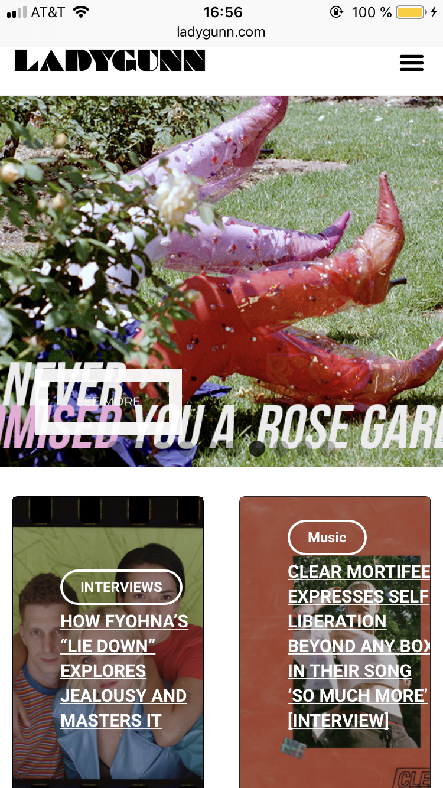
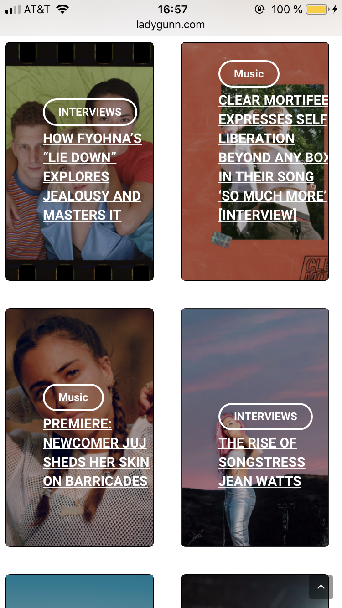
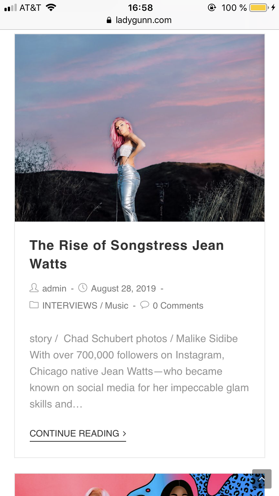
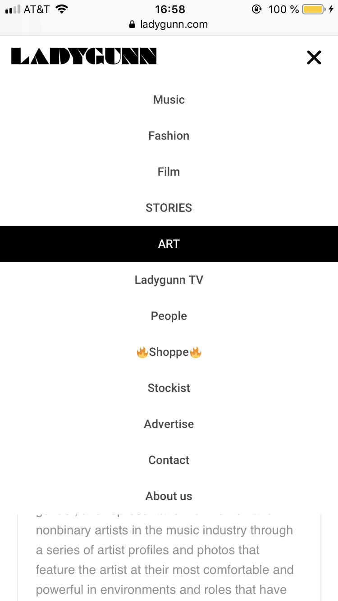

A COMPARISON OF TWO WEBSITES
A SUCCESSFUL WEBSITE
I believe that ignant.com is a successful website because it allows for easy interaction and navigation, as well as allows for more exciting exploration. The design is visually very minimal allowing for only important and necessary information to be viewed and interacted with. It invites the user to explore different areas of design in an easy and exciting way. I believe that most people that visit design websites for pleasure and/or inspiration want to be able to easily access different areas of design or content but also want to explore areas of design that they may not necessarily always choose to click on first. Ignant is set up in a way that allows for the user to first view one article within a section, such as Design: Furniture, and then underneath be able to explore more articles within that section. I enjoy that the first page is curated in a way that allows the user to explore the areas of design that they want to highlight. To me, it is also of great importance that I am always able to see the three lines that indicate a drop down menu at any time, so that I am always easily able to go to a category that I want to explore. It is easy to navigate the page since the user is given options to, for example, view more articles within a certain section and the user is always able to see the menu that can be used to explore a different section. I believe that it is efficient that the user is able to quickly navigate to the section that they want but is also able to explore what Ignant recommends if they wish to do so. From experience, I have not encountered problems with using the website after not using it for a while since the navigation of it is very straightforward and I have also never made an error while using it. I believe that since it is a design website it should be designed in a way that reflects this practice. In my opinion, the design is very pleasant to use since I am able to navigate through it smoothly, and am able to spend time on it for pleasure, simply scrolling through their selection of work on the first page, or easily spend time in a specific category. I really enjoy the amount of content that fits on each page/full screen as well since I am able to view each entire image and the text is easily legible as well as thoughtfully placed. Overall, I believe it is a very successful site that is both efficient and pleasant to spend time using.

The mobile site of ignant.com is as successful as the computer website since it has been designed with the same attention to design and interaction as the computer website. The mobile site has the same characteristics as the computer website but have been placed a bit differently to make it easier to navigate on a mobile device. An important aspect of it, that is also present on the computer website, is that the user is always able to access the drop down menu wherever they are on the website, to be able to easily navigate to a different section. The only aspect I dislike about the mobile site is that it loads to a new page when you click on the search icon instead of instantly being able to type in your search. What I really enjoy about the mobile site is that it has not been stripped down too much and is basically an identical version of the successful computer site.



A LESS SUCCESSFUL WEBSITE
I believe that ladygunn.com is a less successful website because its usability is not very efficient. The first images shown on the website are too big for a computer screen and, as a user, I am not able to scroll through and have any control over the different images/articles that are automatically changing on the first page. Below the initial large rotating imagery, the articles that the website is inviting me to click seem to just be randomly placed, possibly in chronological order, but it is not clear in what kind of order they have been placed. Another aspect of the design that makes me perform tasks slower and allows for errors to be made is the fact that the categories being shown on the articles on the front page do not appear on the menu at the top, or on any drop down menu. This makes it more difficult to be able to navigate the site and does not allow the user to reach the content that they want to access as quickly as possible. It takes too many clicks to accomplish simple tasks and I am not inspired to explore the website. The design is also rather unpleasant since the images are much larger than they need to be and the placement of the text is not well thought out. I also believe the hierarchy of the main categories is ineffective since some of the sections could definitely be placed at the bottom of the page or in a drop down menu to allow for a better understanding of what the site has to offer.


The ladygunn.com mobile site is more successful than the computer website since it is more pleasant to interact with. Most of my critique towards the site remains the same except for the concerns regarding layout. On the mobile site I am actually able to view entire images on both the first page and once I click on an article. A less successful aspect of the mobile site is that I am not constantly able to access the drop down menu as I scroll down the site. Therefore, when I am several articles down, I have to scroll up to the top if I want to navigate to a different section of the site. Overall, it is not a successful mobile site since it does not allow for an efficient experience.


